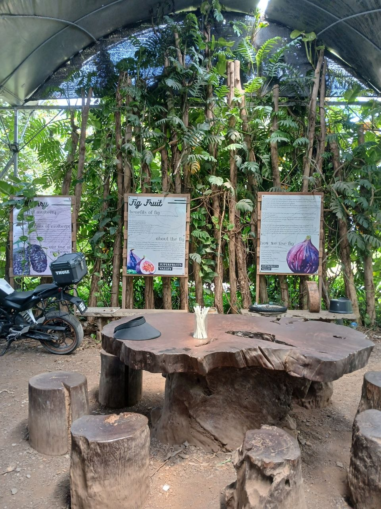

Latar Belakang & Pengalaman

Super Fruits Valley telah diasaskan sejak 10 tahun yang lalu. Pada awalnya, Robin Lim hanya menanam beberapa jenis tanaman sebelum berkembang menjadi sebuah kawasan perladangan yang lebih besar.
Beliau mula memikirkan tentang masalah kekurangan nutrisi yang dihadapi oleh ramai masyarakat di dunia. Disebabkan itu, beliau mula menanam buah-buahan yang tinggi serat dan nutrisi seperti buah tin, mulberi, buah gac, markisa dan lemon.
Selain menghasilkan makanan sihat, Super Fruits Valley juga berkembang menjadi tempat tarikan pelancongan tempatan.
Menurut beliau, bahagian paling digemari dalam pekerjaannya ialah dapat berinteraksi dengan tumbuhan dan pokok. Beliau berpendapat bahawa tumbuhan lebih mudah difahami berbanding manusia kerana tumbuhan tidak “melawan balik”.
Cabaran & Perancangan Masa Depan

Antara cabaran utama yang dihadapi ialah perubahan iklim dan cuaca yang semakin panas.
Bagi mengatasi masalah tersebut, buluh ditanam sebagai teduhan untuk melindungi tanaman daripada cuaca panas melampau.
Beliau percaya bahawa petani perlu menyesuaikan diri dengan perubahan persekitaran bagi memastikan tanaman dapat terus bertahan dan berkembang.
Pada masa hadapan, beliau merancang untuk menanam lebih banyak jenis tanaman terutamanya ulam-ulaman tempatan.